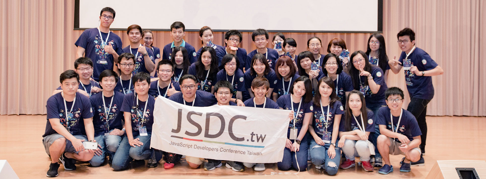

What's JSDC ?
JavaScript 開發者年會 ( JavaScript Developers Conference，簡稱 JSDC ) 是台灣最⼤的 JavaScript 年度性技術研討會，旨在提供台灣中⾼階 JavaScript 技術人才與世界最新 JavaScript 相關技術討論與分享。同時帶動各界廠商的合作與中高階技術⼈才的媒合，創造雙贏的正向循環。
JavaScript 開發者年會
JSDC 打破了壁壘，整合來自獨立開發者、企業、組織及機構的科技力量。我們致力於知識全球化，並讓參與者重新認識 JavaScript。
